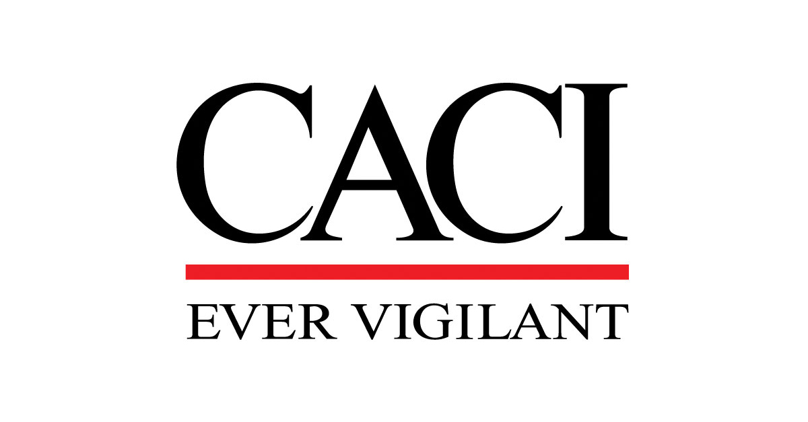

Darren Pulsipher, Chief Solutions Architect, Intel, discusses the barriers to adopting new technologies in the public sector and what is coming in the future with Glenn Kurowski, CTO of CACI.

Video: Youtube Channel
Podcast: Podcast Episode
Blog: Blog Entry
Keywords: cto, organizationalchange, change, people, process
Glenn is the Chief Technology Officer at CACI, a six-billion-dollar fortune-500-size company focused on national security. He has been in the industry for 35 years, dedicated to military, intelligence, and cybersecurity for the US government. He is an engineer, so he thinks, acts, and processes questions like an engineer.
Exciting new technology in AI, neuromorphic, and security is sometimes not quickly adopted in the public sector.
The first barrier is complexity. Those in the technical community are outstanding innovators but not always great at making the technology easy to consume, use, or administer. Glenn sees some improvement, however. For example, in the last five years, the complexity of using AI has significantly decreased as more people are leveraging tools and software development kits.
Another barrier can be the lack of talent to architect, design, deploy, and maintain the technology in the public sector. New talent must not only be attracted to the industry, but they must also be able to get clearances. The other side of the talent equation is many are resistant to adopting new technology. It’s a change management challenge. If not approached correctly, existing talent becomes antibodies to adopting new technology. Instead of asking how to get to “yes,” they come up with a thousand reasons why not.
The third is cybersecurity. Glenn does not describe this as a barrier because it is not something that would be removed. Still, the industry could be more proactive in moving the decisions further to the left and involving security earlier to accelerate adoption.
The public sector could take a lesson from how smartphone technology was adopted so quickly with the advent of the iPhone. Early iPhones were amazingly simple to use, and the company was committed to handing customers something they could immediately utilize. In addition, the development community could instantly create and innovate with the software development toolkits and processes. Kids in the sixth grade can develop with the toolkits for iPhone and Android. Usability was vital, and it ushered in software development efficiently.
The public sector should try to mimic those qualities and approach their market and customers the same way, especially around analytics. There is a tremendous amount of data, and we are not getting a lot of use out of it. Just as Steve Jobs moved his technology outside of the average target, the same thing needs to happen in analytics. Instead of targeting data scientists, maybe the target should be a business person or an average person who has a household to run.
Glenn believes the first step in thinking this way about AI and analytics is being fiercely committed to liberating data. So much data is locked in proprietary designs that it is a lousy business model. Customers should renew contracts not because their information is controlled and closed by a provider but because the provider is offering solutions, value, and innovation.
AI should be couched as a digital assistant to customers rather than a murky, magical robot in the background that the customer is nervous about trusting. A digital assistant is simply one step ahead of what you are trying to accomplish by serving up the data and information via machine learning and deep learning that makes your life easier and lets you do the processing. In this way, AI adds instant value and is much less scary.
Glenn believes the technology that the public sector must have today is, first, the cloud and more of it. Cloud takes a lot of human error out of administration. It lowers the attack surface, and it’s a pay-as-you-go consumption model, which can be economical if you develop software for that model.
Second, are good DevSecOps platforms. Software programmers can spend more time on actual development with the available tools. DevSecOps is still early in action, and the growth will be explosive.
One technology that was key during COVID remote work is Commercial Solutions for Classified (CSFC). This technology has been around for a decade. Still, it has matured to the point where the complexity has been taken out of its deployment, administration, and security to be taken to the edge quite easily. Someone can work in an unclassified domain and still access secrets, for example, confidence that they won’t have any leakage. This is a new, important capability.
All of this ties back to attracting and retaining talent. The difficulty in this is not because the public sector does not have exciting, challenging problems but the perception that the government moves very slowly. There is some truth there because of the importance of maintaining a certain sanctity or confidence. Still, in reality, the government is right on the edge of many new technologies such as photonics or light-based communication. Some pockets move swiftly, such as in software development with agile and DevSecOps.
Glenn believes the space domain will explode and be fundamentally different in five years for the future of technology. The ability to put more things in orbit inexpensively with improvements in size, weight, and power, along with the ability to communicate with photonics over thousands of kilometers quickly, allows connectivity and the ability to distribute and use data on those payloads.
Another area that will be very different is spectrum agility. The domain of the electromagnetic spectrum will be crucial to resilient connectivity in conflicts. The subsequent disputes will heavily emphasize who can communicate and interfere with comms. Spectrum agility is the ability to dynamically know what’s going on around you in the spectrum so you can move quickly. This connectivity is fundamental to joint command and control and the JADC2 vision to work.
A third area is what can be done with Kubernetes and with infrastructure code. Automation will remove labor and ease things in general.
No conversation about the future of technology would be complete without a mention of Quantum. The quantum programming models being built are entirely different from traditional models. We need to get to a point where we have toolkits for programmers that make the process much more automated. Training someone for two years to be a quantum computing programmer doesn’t scale, so we need the software development toolkits to rise, just as the community abstracted out the complexity and developed toolkits for artificial intelligence.
The last area is the continued evolution of edge computing. The number of computing processes is phenomenal, engendering creativity with size, weight, and power. Edge computing will continue to transform to be secure and trusted. Resilient communication may not be a dedicated connection but a mesh network where parts of the message are recombined at the other end. This can provide solutions in tactical and deny and disrupted environments.
Darren sees the traditional Von Neumann architecture waning in the future as we can have data persistence without disk drives, and we can have data that lives, moves, and migrates with functions that work with it. The layers and limitations of the Von Neumann model will be removed.
Glenn thinks this will happen faster than people would generally predict because of experience bias. But it’s a different world when you can get all the other pieces to coexist and remove the latency issues. Imagine what could be done at the speed of inference at the edge, for example, with autonomous vehicles. That technology is happening, and programmers consider abstraction layers from the beginning. So you could, for example, take a neural network model that is already developed and run it through a software development toolkit to place it onto a hardware substrate, a non-Von Neumann architecture, and you don’t have to reprogram. This will accelerate the adoption, and it will be transformational.